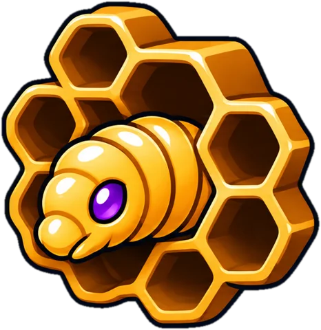

Tap a stage to read its story.
Cellume is a tiny golden bee nestled in a hexagonal honeycomb cell, with a round amber body, one visible eye glowing purple, and stubby wings folded against its back. It rarely leaves its comb-home for long - it sits in the center of its cell and hums at exactly the frequency needed to warm the honey around it. In the Light Grove its hum is so constant that grove-visitors use it as a tuning pitch when they try to recall an old song. It vibrates harder when it hears a correctly spoken word.
Field note: Cellume's hum raises exactly half a pitch when it hears a note struck true - apiarists use it as a living tuning fork.
Light Grove. Cellume and its family are found in the Light Grove. See everyone who lives there.
Share a Bond Food that matches its types to become friends. Cellume loves:
A Bond Food is not a trick. It joins your spirit with the Kimuro's spirit, and only when it chooses you.
Print the Kimuro adventure packs: mazes, cards, a board game and Bond Mark medals.
See the printable packs